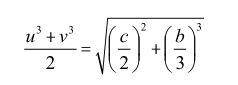
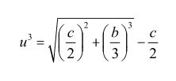
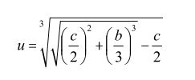
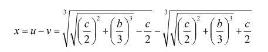

尼克罗醒来的时候已是拂晓。母亲正跪在他身边，满面泪水。她用碎布包裹起男孩受伤的脸，然后把他拖出教堂，母子俩踉踉跄跄地消失在晨雾之中。
一个多月后，复活节那天，加斯顿在拉文纳战役里误中流矢而亡。这颗战争史上的流星从横空出世到阵亡还不到两个月，而那个被战刀砍碎了颚骨和下巴的男孩却在母亲的爱护和照料下顽强地生存下来。布雷西亚大屠杀的惨相一辈子铭刻在心，少年尼克罗立志做一名设计防御要塞的工程师。可是，布雷西亚沦陷之前，尼克罗仅仅学到半个字母表，父亲就被人谋杀了。母亲珍惜儿子的才华，千方百计为他找到一位保护人，于是尼克罗就到帕都亚去学习了。
尼克罗学成回乡时，已经长大成人。他脸上那道可怕的刀痕令人望而生畏，他只好用浓密的胡须遮盖着。残破的颚骨和下巴使他无法像正常人那样讲话，因而被人讥笑为“塔塔利亚”，也就是结巴。尼克罗自视极高，他在众人的讥笑和歧视中长大，变得个性怪异，十分不招人喜欢，最后不得不搬到大城市威尼斯去。
这是文艺复兴的时代，人的价值开始受到重视，能力和知识受到尊敬。威尼斯是个摩登世界，怪人到处都是，尼克罗如鱼得水。只是作为一名数学教师，他默默无闻，收入微薄。那时候的意大利，大学教席基本上来自贵族和富商的资助。要想得到一个位置，不仅需要名声，还需要人际关系。尼克罗什么都没有，很难有出头之日。
为了出人头地，尼克罗拼命地工作。他和一些独立于官方学院之外的学者，是文艺复兴后期在有教养的中层阶级当中传播古代经典的主要力量。公元1537年，他发表了一部介绍抛物运动和火炮射击理论的著作，被后人誉为“弹道学之父”。公元1543年，他把欧几里得的《几何原本》和阿基米德的一些重要著作翻译成当时的欧洲语言，并且纠正了拉丁版《原本》中流传了两个世纪的谬误。在发表这些著作的时候，尼克罗署名塔塔利亚，于是，尼克罗·丰塔纳·塔塔利亚（Niccolo Fontana Tartaglia，约公元1500—公元1557）这个名字名垂青史。
公元1535年初，老朋友祖安尼·达克伊（Zuanne da Coi，生卒年不详）寄给塔塔利亚两道三次方程的问题，希望他帮助解决：
x3 + 3 x2 = 5
x3 + 6 x2 + 8 x = 1000
塔塔利亚钻研了很久，成功地解决了头一个方程。他是怎样得到这个方程的解的呢？我们在前一章里已经看到费罗如何解决方程（16）。这种不完全三次方程具有特殊的意义。塔塔利亚似乎已经意识到，任何一个三次方程：
x3 + a x2 + b x + c = 0 （17）
都可以化简成（16）的形式。今天我们知道，只需要改换一个变量y，使x = y-a / 3，方程（17）就变成了：
y3 + m y+n = 0 （17a）
这就是方程（16）。请读者试着把这个等式里面的m和n找出来（本章练习1）。知道了m和n，只要找到（16）的普遍解，所有三次方程的问题都可以迎刃而解。
塔塔利亚解决方程（16）的方法和费罗有些不同，他从（u-v）3开始。我们知道——
（u-v）3+3uv（u-v）=u3-v3 （18）
塔塔利亚看出，方程（18）跟（16）很相像。因此，如果取x=u-v，并令b=3uv，c=v3-u3，解方程（16）就相当于用b和c来表达u和v。现在，我们看看下面这个等式：（还记得古巴比伦的二项式平方的展开吗？）
[(u3+v3)/2]2=[(u3-v3)/2]+u3+v3（18a）
塔塔利亚的思路是，由于b=3uv，c=v3-u3，（18a）就变成：
[(u3+v3)/2]2=(c/2)2+(b/3)3
对上式开平方，得到：

由于c=v3-u3，(u3-v3)/2=-c/2。把这个等式加到上面等式的两边，我们就得到：

把这个等式开立方：

记得v3=c+u3，v就可以很容易地得到了。最终我们得到：

（19）
这是一个极为令人振奋的进展。塔塔利亚迫不及待地宣布：三次方程，我都能解！他知道，意大利有无数像他这样默默无闻的数学家，一辈子无法出人头地。现在，只要有一个名人出来挑战，他就能向世界公开证明自己的能力。那时，名声和人际关系就都有了。
果然不出所料，很快便有人上钩了。
安东尼奥·费奥尔听到塔塔利亚的宣告，心里很不高兴。他想：“我手中有老师的密解，还不敢如此张狂；你算老几，以为世上没有能人吗？”于是，他送信给尼克罗，要跟他比试比试。
这场别开生面的“决斗”吸引了许多旁观者。按照规矩，费奥尔和塔塔利亚每人给对方出三十道难题，限期交卷，谁解决的问题多，谁就算胜了。失败者必须出资举办三十次豪华的宴会，为胜利者庆贺。
费奥尔也许缺乏想象能力，也许过于轻敌。他给对方出的题，都属于老师解决过的x3+bx=c一类。塔塔利亚冥思苦想，终于在那年2月13日天亮之前找到了普遍解，此后一通百通，势如破竹，两个小时就把三十道题全部解决了。
费奥尔收到的问题很多是x3+bx2 =c形式的，可是这位“大数学家”不会举一反三，很多题解不出来，结果一败涂地。出乎费奥尔的意料，塔塔利亚豪爽地取消了所有的宴席——赢得这场“决斗”对他来说已经足够了。
费奥尔的名字从此在历史上消失，而塔塔利亚则声名大噪。祖安尼督促他：赶紧把研究成果发表！可是不知道塔塔利亚为什么没有这样做。不久，一个人慕名找到了他。于是我们的故事渐渐进入高潮。
人生其实很简单：你得做点什么。多数的时候你失败，有一些会成功。你就做更多成功的事。如果成就大了，别人很快就会来模仿你。那你就去做别的事。窍门在于去做不同的事。
列奥纳多·达·芬奇
你来试试看？本章趣味数学题：
1.验证变量变换x=y- a/3可以把式（17）变成（17a）。把（17a）里面m和n用a、b、c表示出来。
2.验证等式（19）。